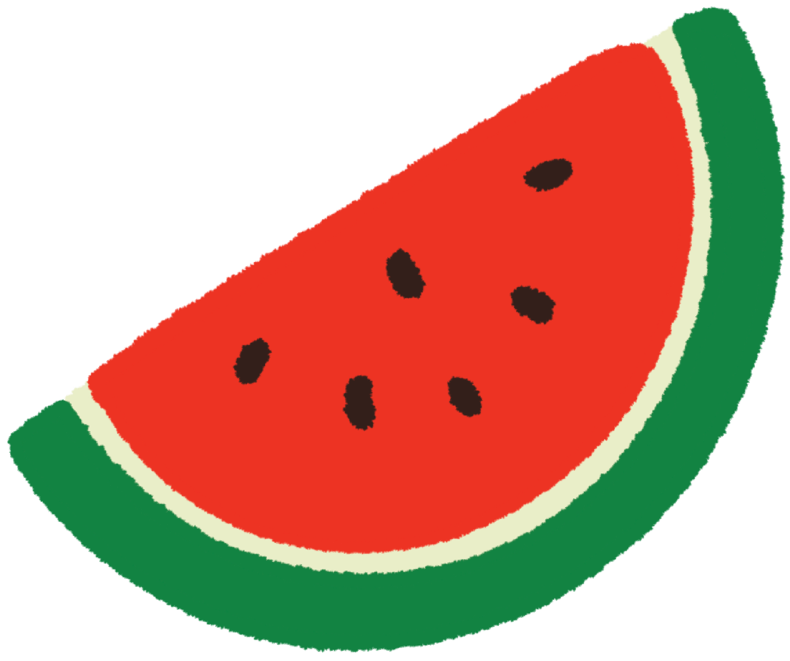
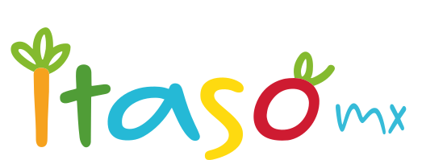
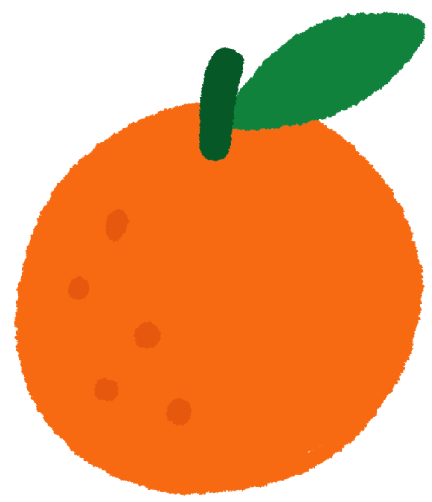
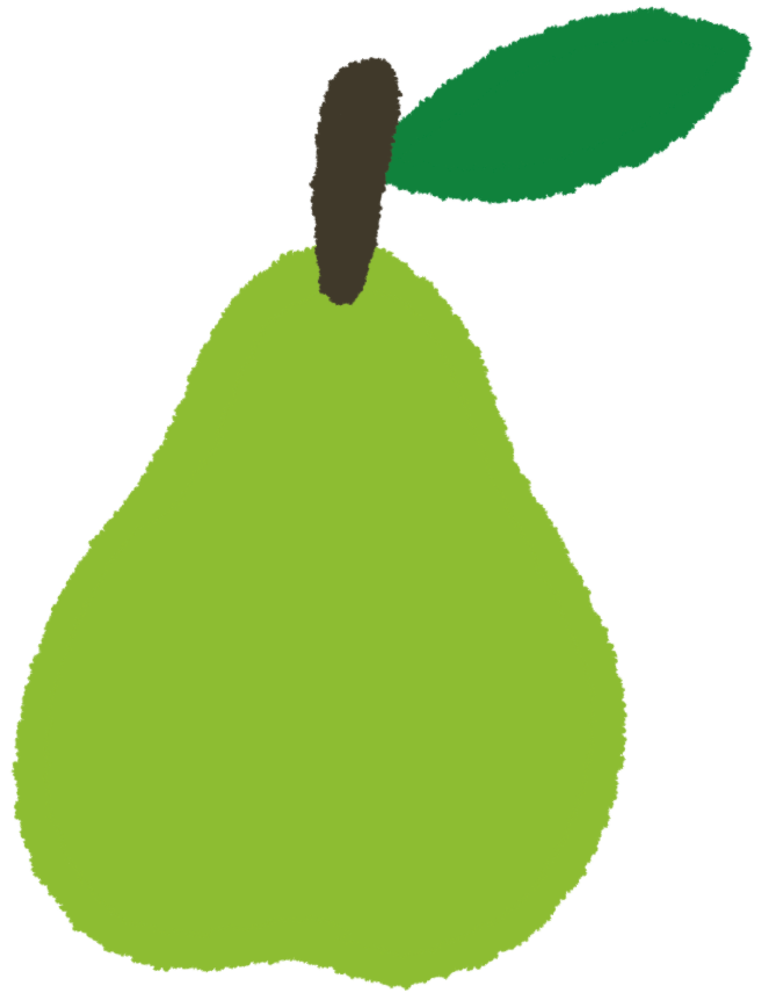
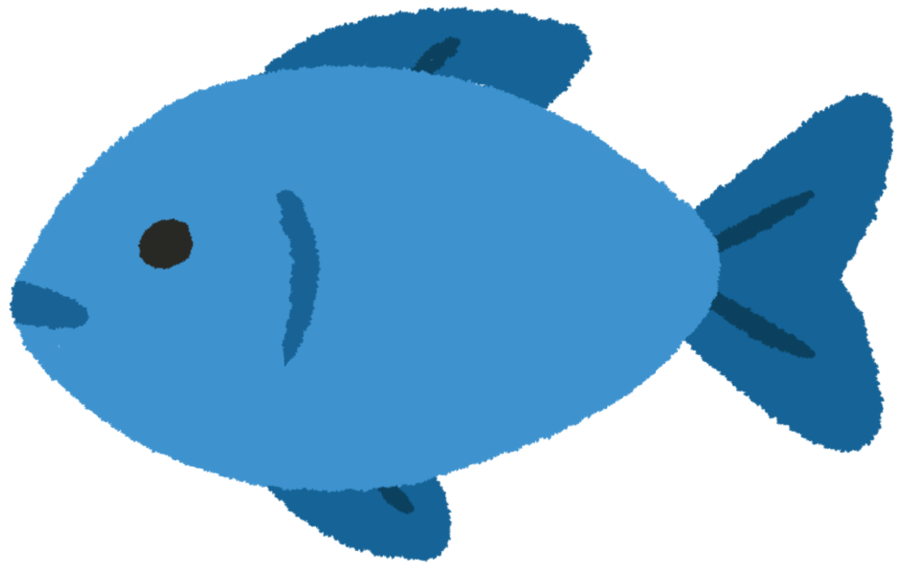
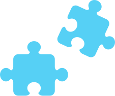

SIN
JUZGAR
Sin culpas ni comparaciones.
Aquí puedes aprender a tu manera.

ITASO es un espacio para descubrir más sobre lo que comes, tomas y haces todos los días.
Aquí puedes aprender de forma diferente: jugando, explorando y haciendo preguntas.
01
Cada día tomamos pequeñas decisiones sobre lo que comemos, tomamos, hacemos y compartimos.
ITASO quiere ayudarte a entender mejor esas decisiones, sin decirte que existe una sola forma correcta de hacer las cosas.
02
Entender mejor lo que haces todos los días puede ayudarte a hacer preguntas, compartir ideas y participar junto con las personas que te cuidan.
03

Sin culpas ni comparaciones.
Aquí puedes aprender a tu manera.

Explicamos las cosas sin hacerlas más complicadas de lo necesario.

No todas las personas viven, comen o hacen las mismas cosas.

Puedes descubrir algo nuevo y compartirlo con quien te cuida.
04
En ITASO también tienes un espacio para aprender a tu manera. Puedes jugar, descubrir cosas nuevas y compartir lo que aprendas con las personas que te cuidan. No tienes que saberlo todo ni tomar todas las decisiones; la idea es que participes, preguntes y conozcas mejor lo que pasa en tu día a día.
Crea tu personaje, juega, explora y descubre cosas nuevas a tu manera.
Crear tu personaje es completamente opcional.Elige un personaje
para comenzar
Hazlo a tu manera
Conozco

Aprendo jugando
Lo llevo a mi realidad
Conozco
Descubre qué información muestran al frente de algunos empaques.
Compara bebidas y observa lo que dice su etiqueta.
Conoce los grupos de alimentos y cómo pueden convivir en un plato.
Explora cómo cambian tus días.
Encuentra las pistas que aparecen en sus distintas partes.
Descubre distintas formas de moverte en la vida cotidiana.
Aprendo jugando
Compara dos etiquetas y descubre qué cuentan.
Encuentra las parejas.
Mueve las piezas hasta completar la imagen.
Mira con atención y encuentra la diferencia.
Descubre las pistas escondidas.
Pon a prueba tus reflejos.
Lo llevo a mi realidad
Encuentra un producto en casa y descubre qué información tiene.
Observa una comida e identifica alimentos de distintos grupos.
Descubre qué bebidas hay en casa y qué puedes observar en sus empaques.
Cuéntale a tu cuidador algo nuevo que hayas aprendido en ITASO.
Observa en qué momentos del día tomas agua.
Participa con tu cuidador y descubre qué ingredientes utilizan.
Lo que voy descubriendo
Se activa cuando terminas por primera vez “¿Cuál tiene más?”.
Encuentra todas las parejas del memorama.
Visita los recursos sobre empaques y sellos.
Participar también abre nuevas posibilidades
Elige el producto que tiene más azúcares por cada 100 ml.
No necesitas memorizar cada cifra. Lo importante es revisar que la base sea la misma para poder comparar.
Memorama
Encuentra los productos iguales y descubre qué te cuenta su empaque.
Azúcares añadidos
Ahora sabes que los sellos son una primera pista, pero comparar la información de los productos puede ayudarte a entender mejor qué contienen.
“No tienes que memorizar los números. Lo importante es aprender a comparar.”